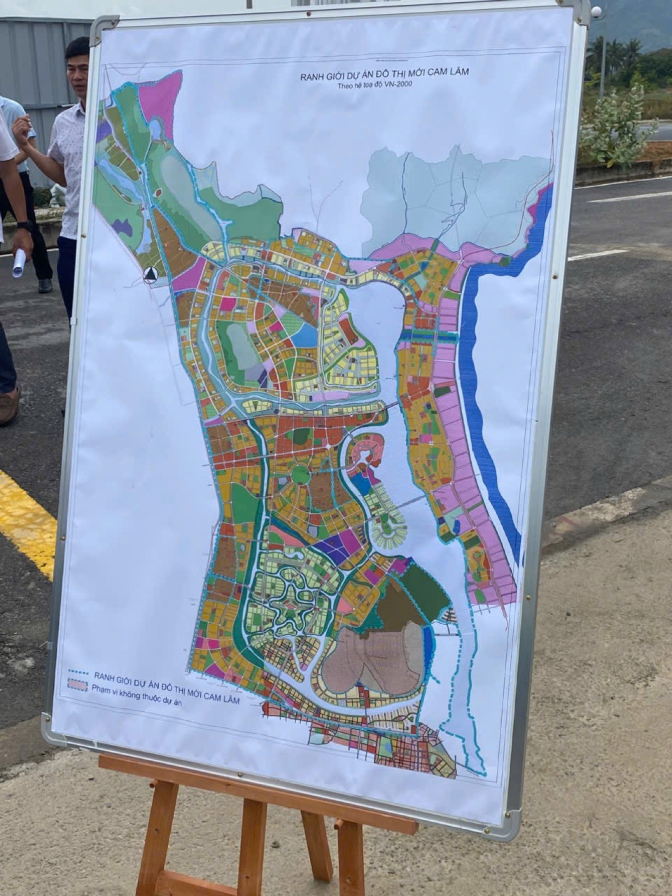

Mua đất Cam Lâm: cách tôi lọc lô "an toàn" ngoài ranh thu hồi
Dạo này tuần nào tôi cũng nhận được câu hỏi: "Đất Cam Lâm mua được chưa em?" — vì ai cũng nghe tin đại dự án, ai cũng sợ chậm chân.

Nhưng sau nhiều buổi cà phê với anh em môi giới thổ địa dưới đó và tự đi thực địa, tôi nhận ra: câu hỏi đúng không phải "mua được chưa", mà là "lô này AN TOÀN hay DÍNH RANH?". Trả lời sai câu này, mọi tính toán phía sau đều vô nghĩa. Bài này tôi chia sẻ đúng bộ lọc tôi đang dùng.
"Đất an toàn" là gì — và vì sao nó quyết định tất cả
Cam Lâm đang trong giai đoạn đặc biệt. Toàn khu vực đã được Thủ tướng phê duyệt quy hoạch chung đô thị mới hơn 54.700 ha từ đầu 2024 — định hướng đô thị sân bay tầm quốc tế. Bên trong đó, một đại dự án hơn 10.000 ha của một chủ đầu tư lớn, tổng vốn khoảng 10 tỷ USD, đã chọn xong nhà đầu tư giữa năm 2025 và đang giải phóng mặt bằng giai đoạn 1 (hơn 2.000 ha) từ đầu 2026.
Với người mua đất, toàn bộ khu vực chia làm hai loại số phận:
- Đất DÍNH RANH thu hồi: nằm trong ranh dự án. Mua trúng loại này, anh/chị không sở hữu lâu dài được — chỉ nhận đền bù theo đơn giá nhà nước, thường thấp hơn nhiều giá mình vừa mua. Anh em trong nghề gọi thẳng là "bị kẹp".
- Đất AN TOÀN: khu dân cư hiện hữu được quy hoạch giữ lại, ngoài ranh thu hồi. Được ở, được xây, được bán bình thường — và hưởng trọn hạ tầng, tiện ích của đại dự án mọc kế bên.

Điều ít người nói với anh/chị: theo anh em thổ địa, đất an toàn chỉ chiếm khoảng 1 phần 10 vùng ảnh hưởng. Chín phần còn lại là nơi mà sự hưng phấn "mua gần dự án lớn" có thể biến thành bài học đắt tiền.
Và một đặc tính thị trường đáng chú ý: chủ đất an toàn biết mình an toàn, nên phần lớn găm hàng chờ giá. Hàng thật khan, còn hàng được chào ồ ạt giá rẻ thì... anh/chị nên tự hỏi vì sao nó rẻ.
4 nhịp sóng giá quanh đại dự án — anh/chị đang định vào nhịp nào?
Giá đất quanh một đại dự án không tăng đều. Nó tăng theo từng đợt sóng, mỗi đợt gắn với một mốc:
- Sóng tin đồn — dự án mới được nhắc tới, người thạo tin âm thầm gom trước.
- Sóng quy hoạch — công bố, duyệt quy hoạch 1/2000 rồi 1/500. Mỗi bước pháp lý là một đợt tăng.
- Sóng hạ tầng — khởi công cầu, đường, tiện ích lớn. Kinh nghiệm nhiều thị trường: phóng một con đường qua là mặt bằng giá đổi hẳn.
- Sóng mở bán — chủ đầu tư ra hàng, thị trường thứ cấp sôi động theo.
Cam Lâm giữa 2026 đang ở đâu? Quy hoạch chung đã duyệt, các quy hoạch phân khu đã lần lượt công bố, quy hoạch chi tiết đang hoàn thiện — và máy móc đã bắt đầu chạy ngoài công trường giai đoạn 1. Tức là thị trường đang đứng cuối sóng quy hoạch, đầu sóng hạ tầng. Một số khu đã tăng rất mạnh từ 2025; chu kỳ sốt trước đó, có lô từ vài trăm triệu lên gần gấp ba.
Người thắng không phải người mua đúng đỉnh sóng vì sợ lỡ. Là người vào trước một nhịp, ở khu an toàn, giá còn dưới mặt bằng — và đủ kiên nhẫn chờ nhịp kế tiếp.
3 bước tôi lọc một lô đất Cam Lâm
Bước 1 — Đối chiếu TỪNG THỬA với bản đồ quy hoạch. Không tin mô tả miệng, không tin "anh yên tâm khu này ngon". Từng số tờ, số thửa phải được soi trên quy hoạch phân khu (và quy hoạch chi tiết khi được duyệt) bằng công cụ tra cứu và văn bản chính thức. Tôi đã viết riêng một bài về 5 lớp kiểm tra quy hoạch trước khi xuống tiền — với đất Cam Lâm lúc này, bước đó không phải "nên làm" mà là bắt buộc.
Bước 2 — Soi giá theo mặt bằng khu an toàn, không soi theo lời hứa. Mỗi khu dân cư an toàn có một mặt bằng giá riêng mà anh em thổ địa nắm rất chắc. Lô chào dưới mặt bằng ở khu an toàn mới là hàng đáng bàn; lô "vẽ tương lai" giá trên trời thì tương lai đó ai hưởng chưa biết, người trả tiền là anh/chị.
Bước 3 — Thực địa và hỏi người thổ địa. Đất gốc trong dân không nằm trên mạng. Muốn có hàng thật giá thật phải xuống tận nơi, đứng trên đất, và có người địa phương xác nhận chéo. Tôi xây dựng mạng lưới anh em môi giới thổ địa Cam Lâm chính vì vậy — mỗi người thạo một khu, định giá chéo cho nhau để không ai mua hớ.
Bài học này tôi trả giá để có
Vì sao tôi kỹ đến vậy? Vì năm 2021–2022 tôi từng là người mua FOMO — dùng đòn bẩy xuống tiền khi chưa hiểu hết quy hoạch và nhịp sóng, và trả giá bằng tiền thật của gia đình mình.
Từ đó tôi làm nghề với một nguyên tắc không đổi: nói rủi ro trước khi nói lợi nhuận. Cam Lâm là cơ hội thật — nhưng chỉ với người mua đúng loại đất, đúng nhịp sóng, đúng giá. Còn thương vụ nào khiến mình mất ngủ, dù lãi mấy tôi cũng khuyên bỏ. Tôi gọi đó là chuẩn "ăn ngon, ngủ yên".
"Có cách nào tốt hơn hay không?" — câu tôi tự hỏi mỗi ngày. Với đất Cam Lâm, cách tốt hơn luôn bắt đầu bằng việc kiểm tra kỹ hơn.
Sống tử tế · Kiếm tiền hạnh phúc · Cho đi giá trị
Anh/chị đang nhắm một lô đất Cam Lâm?
Gửi tôi vị trí hoặc số tờ, số thửa — tôi kiểm tra giúp lô đó an toàn hay dính ranh, đang ở nhịp sóng nào. Miễn phí, và nói thật cả mặt bất lợi.
Nhắn Zalo — 0869 668 638